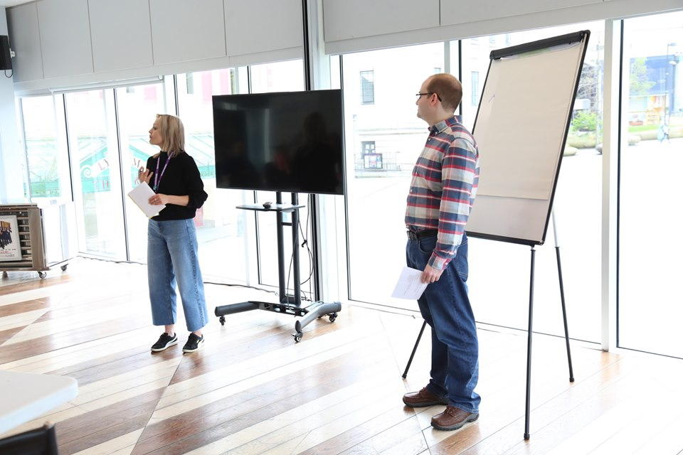
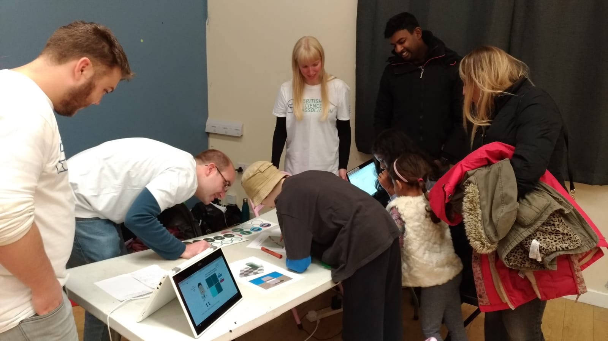
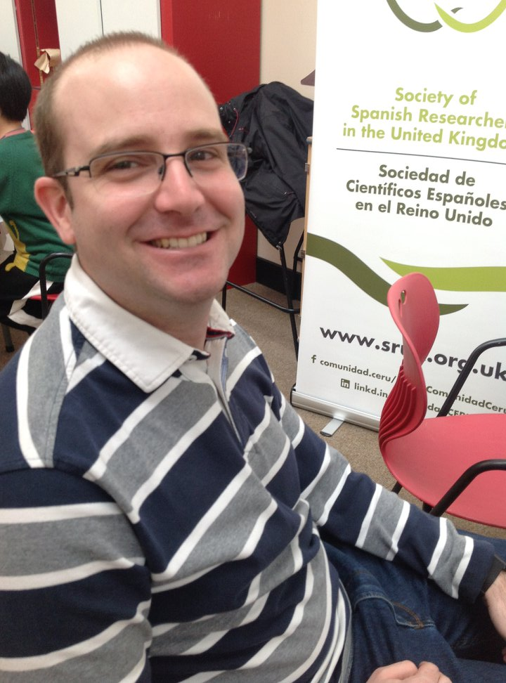
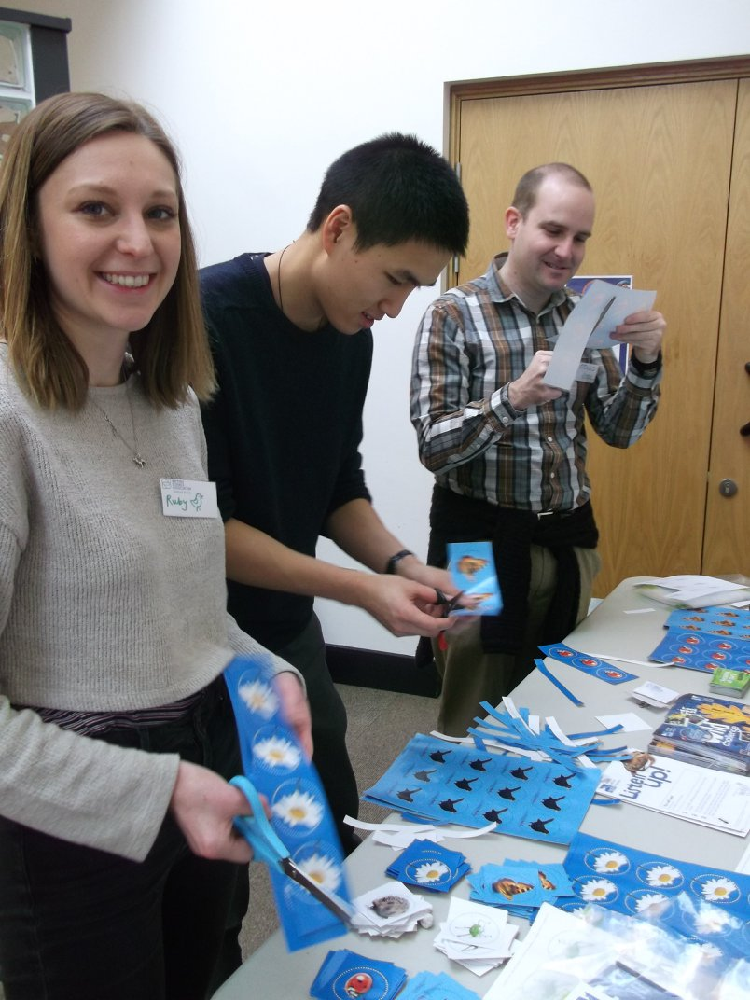
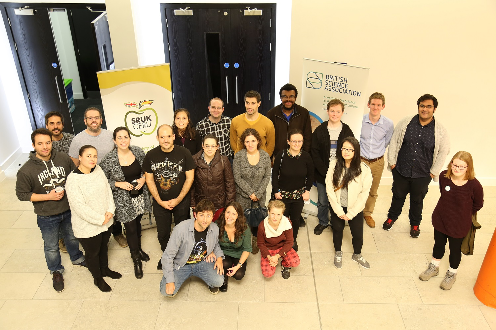
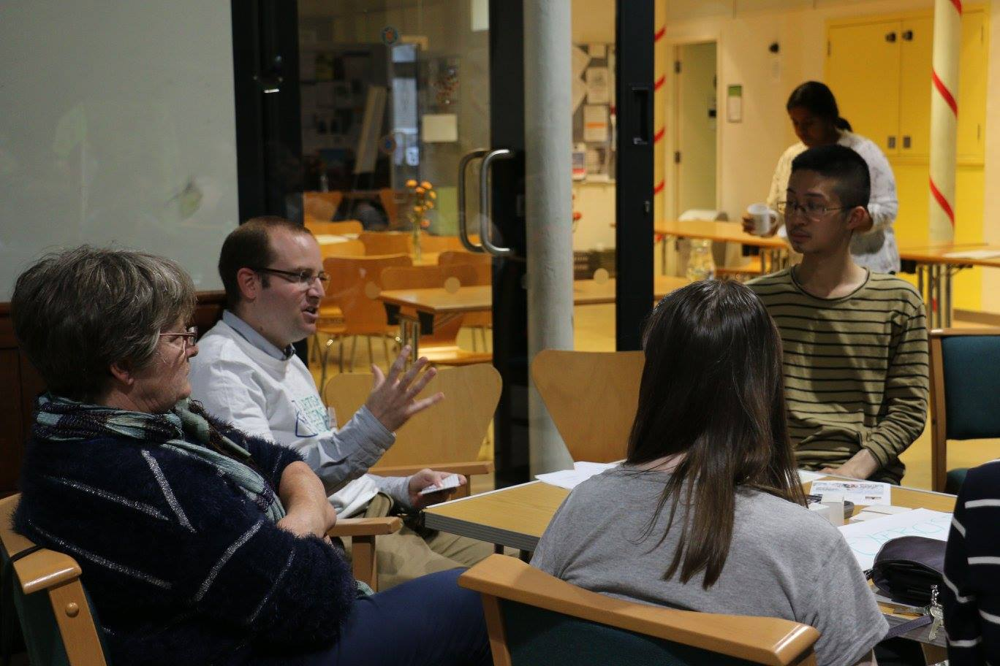

Outreach
overview
As a scientist, I believe it is important to bring research out of the lab and share our passion for science with the general public. I am the secretary of the Yorkshire delegation of the Society of Spanish Researchers in the United Kingdom (SRUK), and was interim Chair of Sheffield Science Outreach (formerly the Sheffield branch of the British Science Association, BSA).
science communication writing
- Quantum computing: the future of computers — SRUK blog, co-authored with Miguel Figueres, Laura Martinez and Margarita Segovia
- The drug discovery process — SRUK blog
- Artificial intelligence: hype or revolution — SRUK blog
science for everyone workshop
This event took place at the Crucible Theatre in Sheffield, in collaboration with Beverley Nunn, organiser of Fun Palace in Sheffield. I talked about our experience in BSA Sheffield organising science outreach activities, demonstrated a few simple activities from previous events (and the science behind them), and facilitated group discussion to brainstorm ideas for events participants were planning. A great opportunity to connect people and organisations across Sheffield and show that science activities were not only for scientists.

fun palaces 2018
This event took place at the Theatre Deli in Sheffield. Under the Fun Palaces slogan "Everyone a scientist, everyone an artist," the BSA organised a series of activities around colour. I was part of an activity dedicated to optical illusions and optical tests, running interactive tests on colour perception and the Stroop test alongside printed illusions — both proved very popular and had whole families competing for high scores.

D3i4AD open day
This event took place at the University of Bari, Italy, as part of the final conference of the D3i4AD project. A group of school children visited the university, and I designed an activity to show them how medicines work inside the body. The activity focused on molecular flexibility (using physical models) and protein shapes (using pipe cleaners — the most popular part!), culminating in viewing a real protein–ligand complex on a laptop.

science of multilingualism
This event took place at the Weston Park Museum in Sheffield and promoted the benefits of learning a foreign language, especially for children. The event included stands for Spanish, Bulgarian, Chinese, and Arabic, each pairing language tasters with simple scientific experiments. The Spanish stand, promoted by SRUK, showcased a neuron and astrocyte preparation under a microscope, in honour of Santiago Ramón y Cajal.

nature detectives
This event took place at the Weston Park Museum in Sheffield. We organised stands with activities for children to learn about different animal parts and what they reveal — including spoor, teeth, and footprints. Children also learned to use a taxonomical key to identify animals. The Otter Lab from the University of Sheffield was also present.

CineScience Sheffield
CineScience events mix film and science: a documentary screening followed by expert discussion. The third CineScience Sheffield event (October 2017, the Diamond building) focused on amyotrophic lateral sclerosis (ALS). The documentary shown was Jason Becker: Not Dead Yet, telling the story of a guitarist virtuoso diagnosed with ALS at 20 who, twenty years later, was still alive and creating music. A panel of two scientists, a clinician, and an association representative discussed scientific, clinical, and human aspects of the disease.

science of wellness
This event (Victoria Centre, Sheffield, September 2017) explained and promoted activities with proven mental health benefits: exercise, storytelling, creative activities, time in nature, food, and mindfulness. BSA volunteers presented the scientific evidence, showed participants how experiments are designed, then encouraged each participant to choose one activity and track their mood over a month — with a follow-up event to discuss results.
